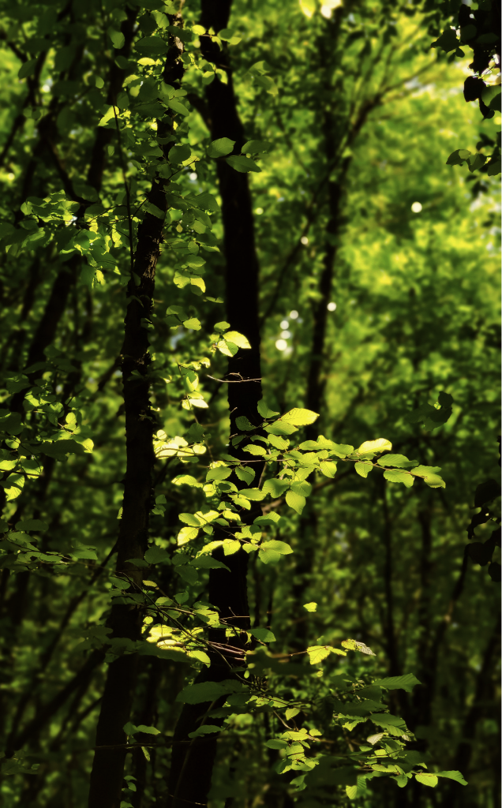
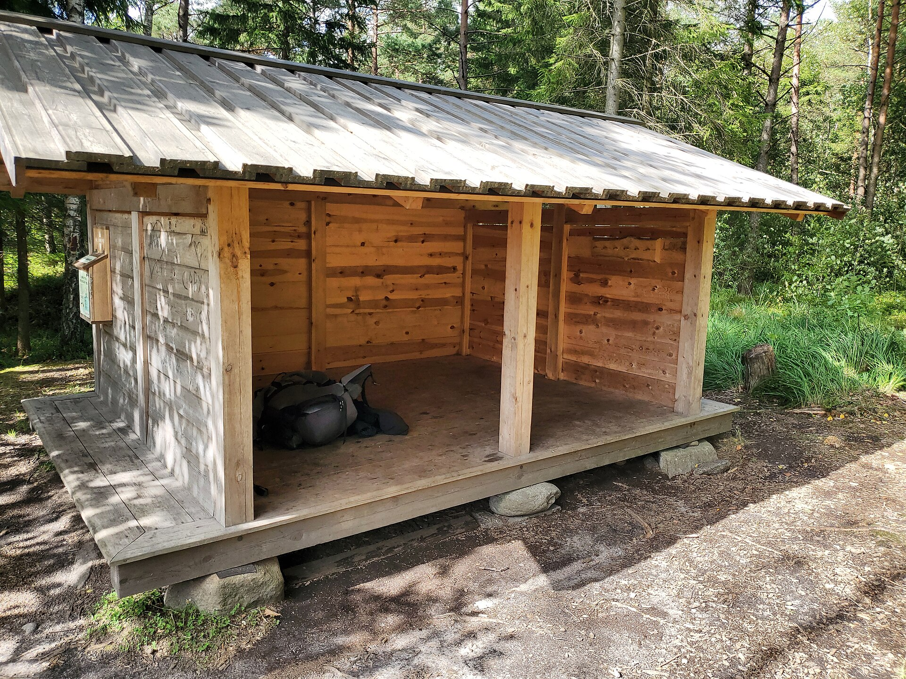
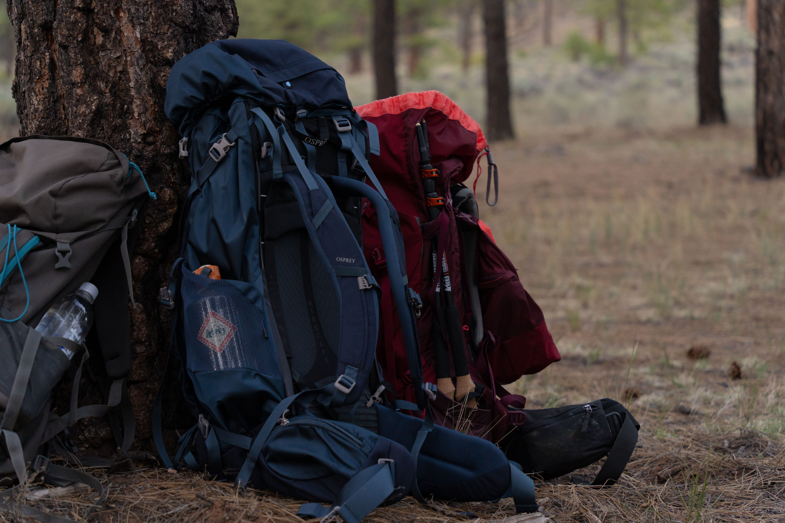
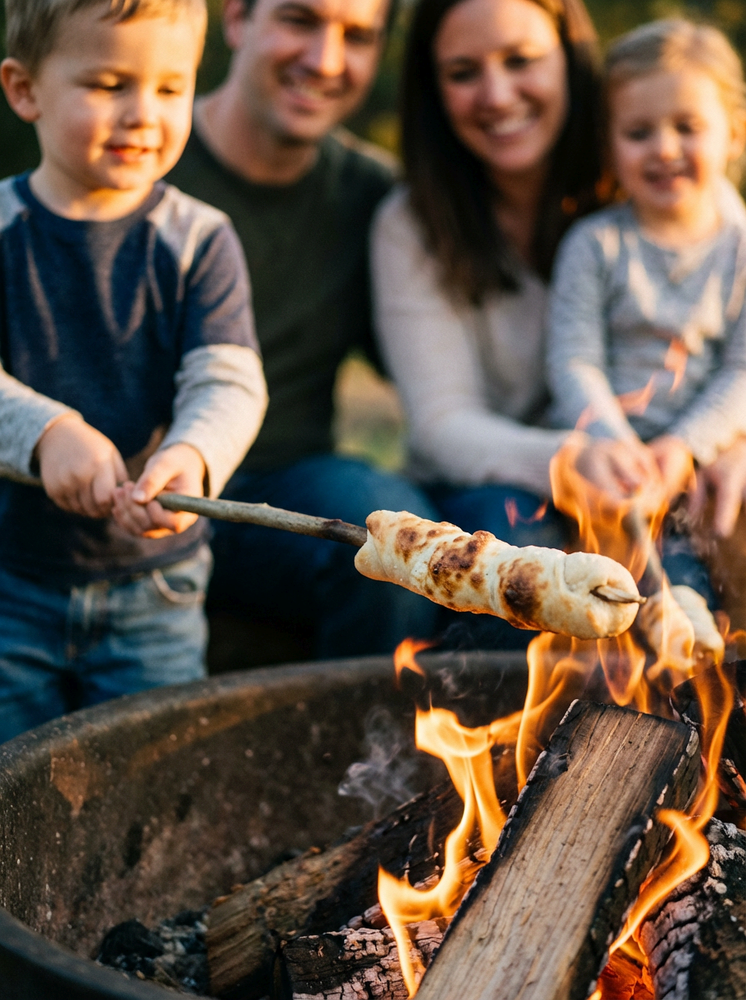

Planlæg din første tur som frilufter
5 trin til din første overnatning i naturen.

Start med få km
Den første tur skal være én nat, tæt på hjemmet. Så kan du prøve grejet og vænne dig til at sove ude uden meget planlægning. Hvis det går helt galt, kan du køre hjem til din egen seng.
Tag gerne en ven med, der har prøvet det før. Snak også om forventningerne på forhånd, både med dig selv og med dem, du tager afsted med.

Find og book et shelter
Et shelter er det nemmeste sted at starte, fordi et telt er mere bøvl og koster mere. De fleste sheltere er gratis. Du kan finde dem hos udinaturen.dk eller booke via Naturstyrelsens bookingsystem.
Vælg et shelter, der kan bookes, så du ved, der er plads, når du kommer frem. Læs også de lokale regler for stedet.

Planlæg ruten og tjek vejret
Vælg en kort rute på 5 km, så du har kræfter tilbage, når lejren skal laves. Tjek vejrudsigten og tilpas pakningen efter den. Hav kortet på telefonen og et papirkort som backup. Fortæl altid nogen, hvor du tager hen, og hvornår du regner med at være hjemme.

Saml grejet, og lån før du køber
Det vigtigste til en overnatning er et sovesystem: en sovepose plus et liggeunderlag, der isolerer mod jorden. Dertil kommer en lommelygte eller pandelampe, godt fodtøj og tøj i lag med regntøj yderst. Brug det, du har, og lån resten. En billig sovepose duer fint til at begynde med. Pak efter en pakkeliste.

Hold mad, vand og førstehjælp enkelt
Medbring simpel mad hjemmefra som fx en sandwich eller til snobrød og pølser. Tag rigeligt vand med, cirka en halv liter i timen, mens du går. Pak en lille førstehjælpstaske med plaster.